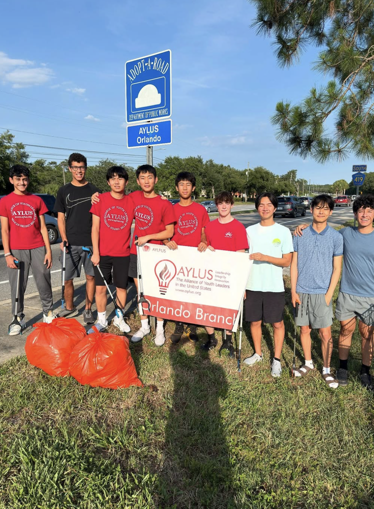
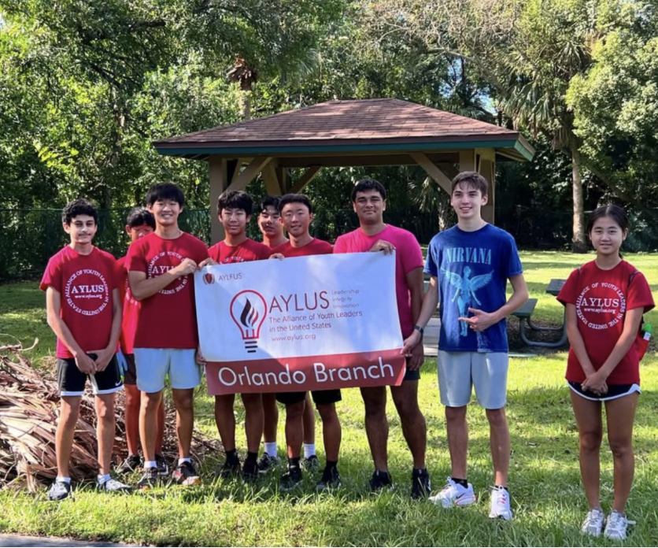
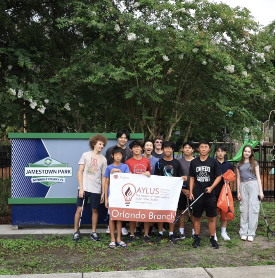
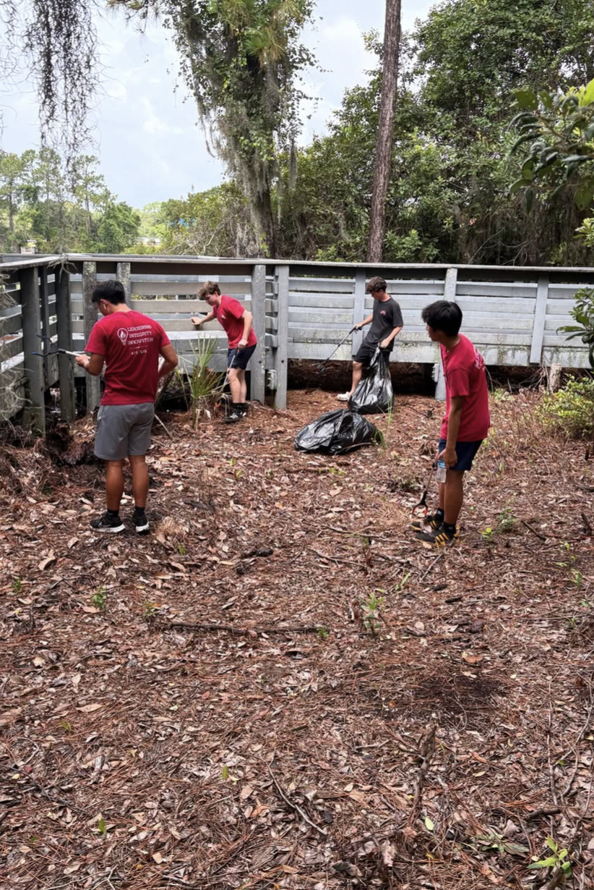
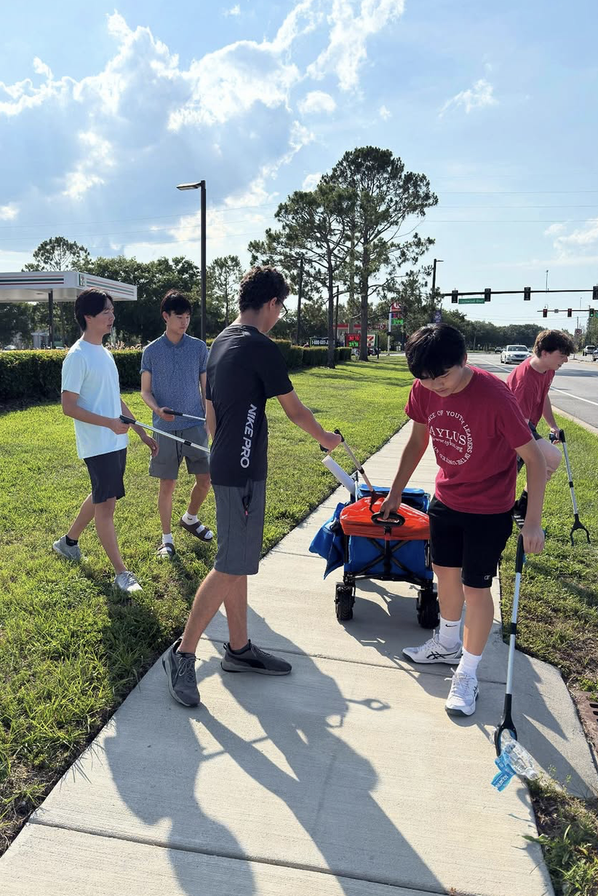
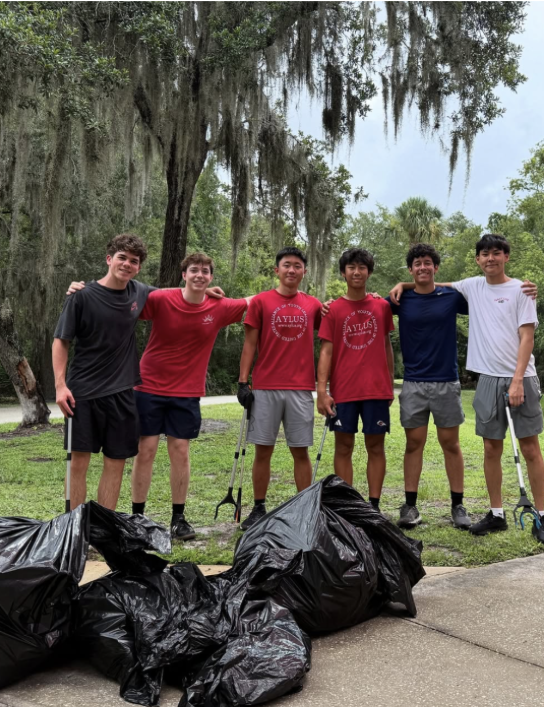
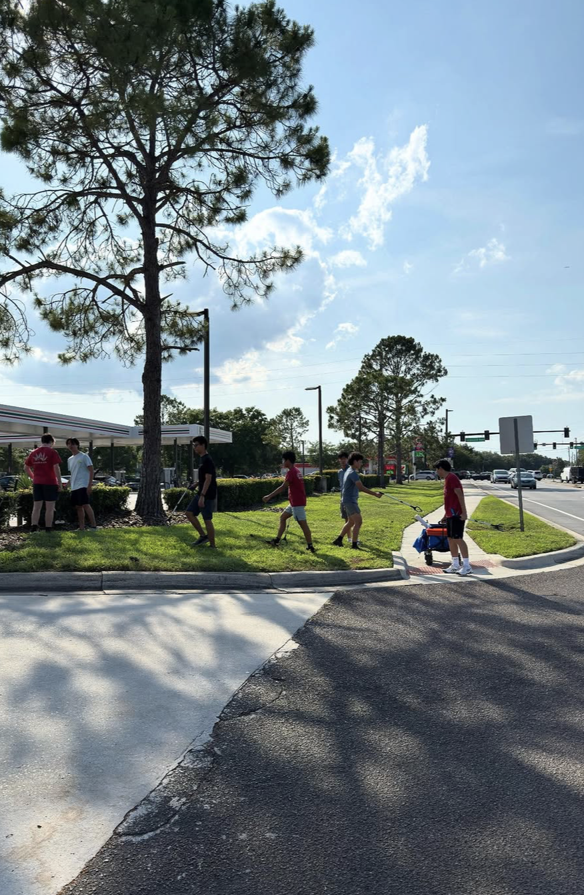
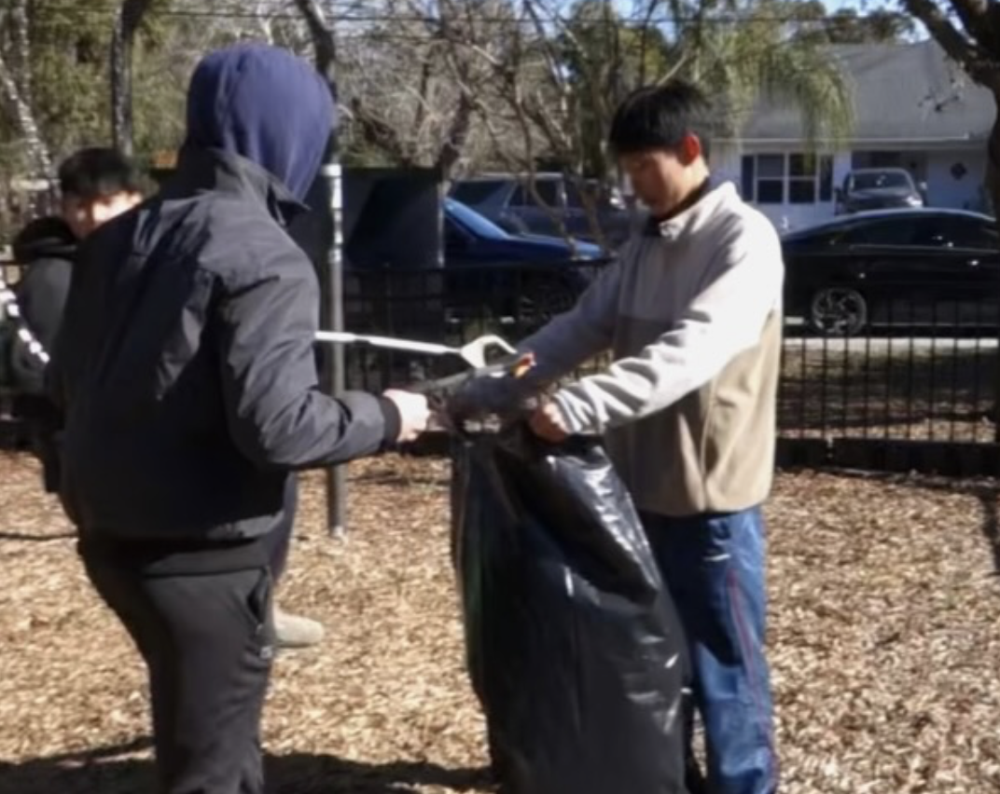
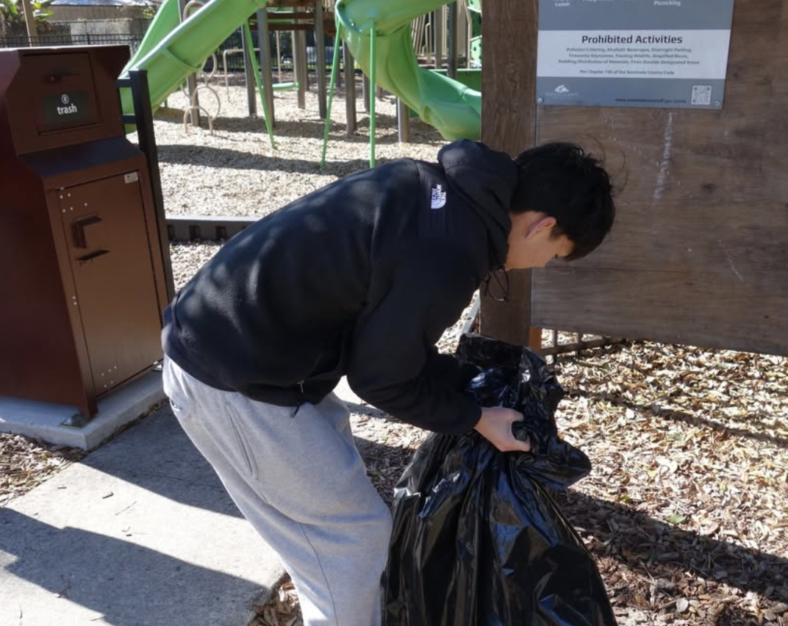
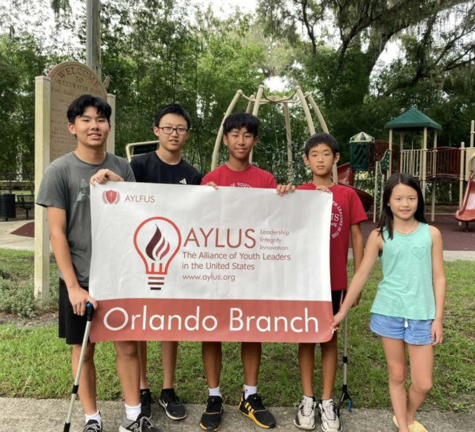

Road cleanups
We have completed 12 cleanups on SR-419, picking up bottles, wrappers, plastics, and other waste items along a high-traffic local road.

AYLUS Orlando Branch cleanup initiative
Making cleanups more accessible across Central Florida.
Sweep helps people find, create, and join road, park, and neighborhood cleanups in Oviedo, Winter Park, and nearby communities.
About us
Sweep is a cleanup website for AYLUS, a nonprofit organization run by high school students. Our team focuses on environmental cleanliness, mainly across Oviedo and Winter Park right now, while building momentum for a wider community impact.
We make it easier for students, families, and local residents to see where help is needed, sign up for existing cleanup events, and recommend new places that deserve attention.

Our work

We have completed 12 cleanups on SR-419, picking up bottles, wrappers, plastics, and other waste items along a high-traffic local road.

We have hosted 9 cleanups across Jamestown, Sweetwater, and Round Lake parks to keep shared outdoor spaces cleaner and more welcoming.

Neighborhood cleanups are a new initiative designed to help residents improve everyday environmental cleanliness close to home.

Impact
Our impact is practical and local: cleaner sidewalks, safer parks, fewer loose plastics near waterways, and more young people taking ownership of the places they use every week.
Gallery



Team
Sweep is organized through the AYLUS Orlando Branch by students working to make cleanup opportunities easier to find and easier to host. The team coordinates locations, volunteer interest, and community outreach.
Nathan Lu: nathanzeyu@gmail.com or 689-297-8713
Ryo Kimura: rkimura6817@gmail.com or 407-242-5504

Get involved
711 Lockwood Blvd, Oviedo, FL 32765
View address2135 South St, Oviedo, FL 32765
View address891 E Broadway St, Oviedo, FL 32765
View address201 E Magnolia St, Oviedo, FL 32765
View address